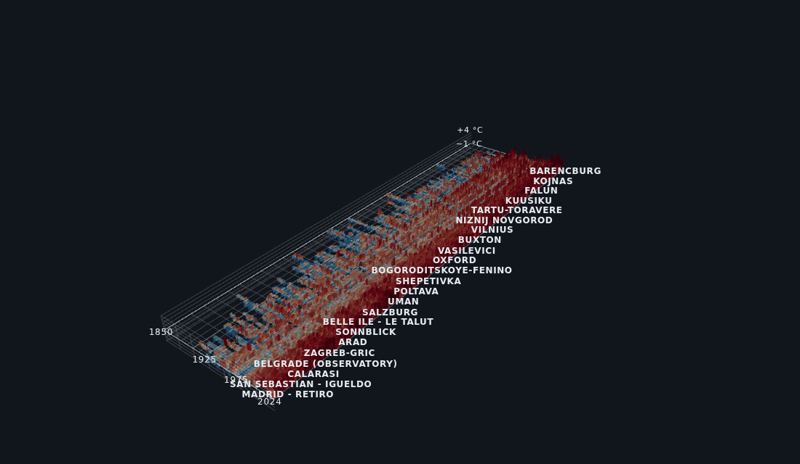
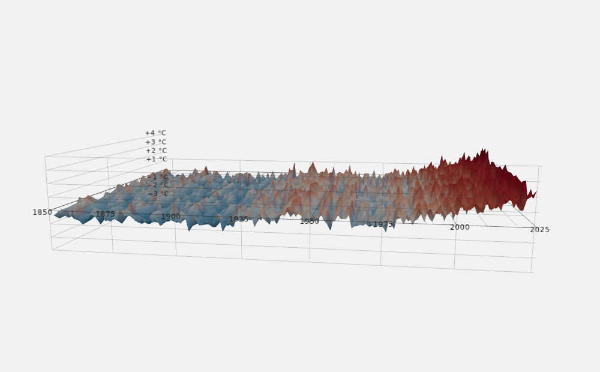
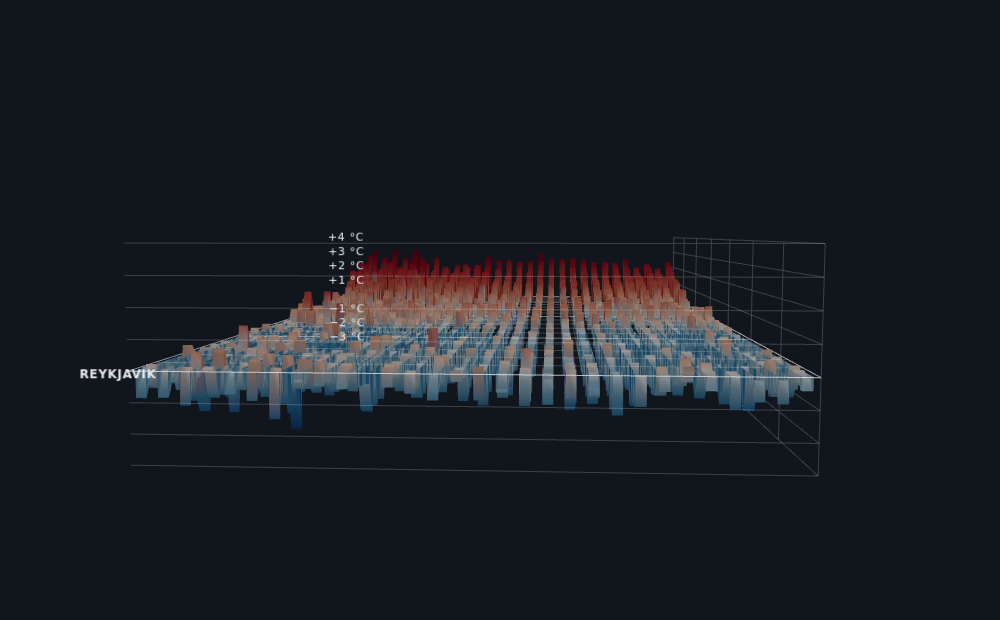
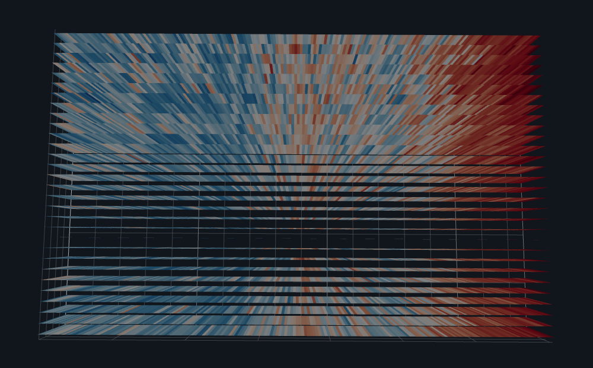

175 Jahre Klimageschichte zum Anfassen

Jede Säule ist ein Jahr an einem Ort. Links beginnt 1850, rechts endet 2024; nach hinten reihen sich Wetterstationen von Spitzbergen bis Melbourne. Blau heißt kälter, Rot heißt wärmer als das Mittel von 1961–1990. Ein Jahrhundert lang wogt das Feld richtungslos um die Nulllinie — dann hebt es sich als Ganzes. Kein einzelner Ort erzählt diese Geschichte; erst die 758 Stationen gemeinsam machen sie unübersehbar.
Das Ganze ist kein Video und keine Grafik, sondern ein Custom Visual für Microsoft Power BI: Die Daten kommen aus dem normalen Datenmodell, jeder Slicer wirkt sofort, jeder Klick ins 3D-Feld filtert die anderen Diagramme der Berichtsseite mit.
Das Beispiel in 30 Sekunden
Aufbau Jahr für Jahr, Wechsel ins Relief, Rotation, Aufsicht — so fühlt sich das Visual im Report an:
Vier Blicke auf denselben Datenraum
Das Visual rendert die identischen Daten in vier Darstellungsformen — vom klassischen Streifenbild bis zur Geländelandschaft:



Interaktion: ein Visual, kein Film
- Fünf kuratierte Kameraperspektiven mit animierten Kamerafahrten, dazu freie Orbit-Steuerung und echtes Hineinfliegen bis zwischen die Säulen — das Mausrad zieht zum Punkt unter dem Zeiger.
- Aufbau-Animation: das Feld wächst Jahr für Jahr von 1850 bis heute.
- Auslesefeld beim Überfahren: Stationsname, die klassischen Warming Stripes dieser Station, Wert und Rang des Jahres („2018 · +1,87 °C · Rang 3 von 149“).
- Power-BI-nativ: Klick = Cross-Filter auf alle anderen Visuals der Seite, Rechtsklick = Kontextmenü, Hover = Tooltip. Jeder Slicer wirkt sofort.
- Kiosk-Modus für Wandmonitore: nach einstellbarer Inaktivität kreist die Kamera langsam, jede Berührung pausiert.
- Analyse: Glättung (5/11/21-Jahres-Mittel), Sortierung der Ortsachse (u. a. nach Erwärmung), frei wählbare Referenzperiode, 4K-Skalierung, Hell/Dunkel.
⇄ Der Referenz-Kippschalter
Ein Klick wechselt die Nulllinie von 1961–1990 (WMO-Standard) auf 1850–1900 (vorindustriell) — und das gesamte Feld kippt sichtbar ins Rote. Es ist derselbe Datensatz, nur die Frage ist eine andere: „wärmer als früher?“ statt „wärmer als zuletzt?“. Der stärkste Moment des Visuals.
Die Daten
| Wetterstationen | 758 aus 70 Ländern |
|---|---|
| Zeitraum | 1850–2024 (175 Jahre) |
| Datenpunkte im Visual | bis zu ~71.500 Jahreswerte |
| Quelle | NOAA GHCN-Daily (public domain), tagesgenaue Rohmessungen |
| Aufbereitung | Tag → Monat → Jahr, mit Qualitäts- und Vollständigkeitsregeln |
| Referenz | Anomalie gegen das stationseigene Mittel 1961–1990 |
Mittel über die 153 Stationen mit durchgehender Reihe seit 1900, jeweils gegen die Referenz 1961–1990. Dazwischen liegt keine gerade Linie, sondern die bekannte Kurve mit der Abkühlungsdelle der 1960er — das Feld reproduziert sie sichtbar.
Making-of
Ausgangspunkt war ein interaktives Standalone-Artifact (WebGL/three.js) mit kuratierten 60 Städten.
Portierung als Power-BI-Custom-Visual: Die Daten kommen seitdem aus dem Datenmodell — Slicer, Cross-Filtering, Tooltips und Formatbereich inklusive. three.js wird gebündelt, das Visual lädt zur Laufzeit nichts nach.
Die Demo-Daten wurden durch echte Messreihen ersetzt: eine reproduzierbare Pipeline lädt NOAA GHCN-Daily (tägliche Rohwerte), aggregiert zu Jahresanomalien und filtert Stationsfehler heraus.
Die echten Daten — viermal mehr Orte, 33 % Lücken — deckten Grenzfälle im Renderer auf, die mit kuratierten Daten nie auftraten: Nebel und Kameraeinpassung mussten mit der Feldgröße skalieren, und Datenlücken bleiben als Lücken sichtbar statt als Nullwerte.
Entwickelt wurde das Projekt im Pair mit Claude (Anthropic) — von der Analyse des Original-Artifacts über die Portierung bis zur Datenpipeline.
Selbst ausprobieren
Quellen & Attribution
Darstellung inspiriert von den „Warming Stripes“ von Prof. Ed Hawkins, University of Reading — showyourstripes.info.
Datengrundlage: NOAA Global Historical Climatology Network – Daily (Menne et al. 2012, doi:10.7289/V5D21VHZ), aufbereitet zu Jahresanomalien gegen 1961–1990; Aufbereitung siehe Projekt-Repository.
Die Screenshots dieses Beitrags stammen aus den GHCN-Daten. Einzelne Sequenzen des Demo-Videos nutzen den kuratierten 60-Städte-Demo-Datensatz, dessen Einzelstadtwerte rekonstruiert sind (Details: QUELLEN.md, Abschnitt 2). Das Visual zeigt 758 einzelne Messreihen gleichzeitig — kein flächengewichtetes Globalmittel.
Software: three.js und Power-BI-SDK (MIT-Lizenz); GHCN-Daten gemeinfrei.